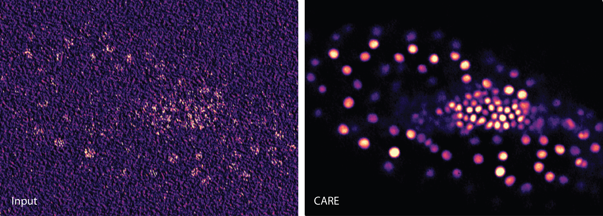
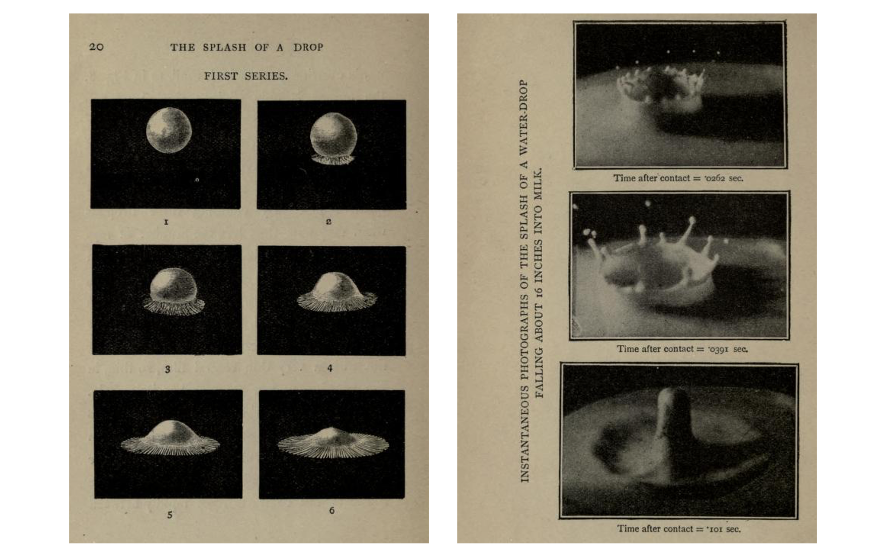
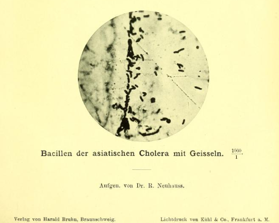
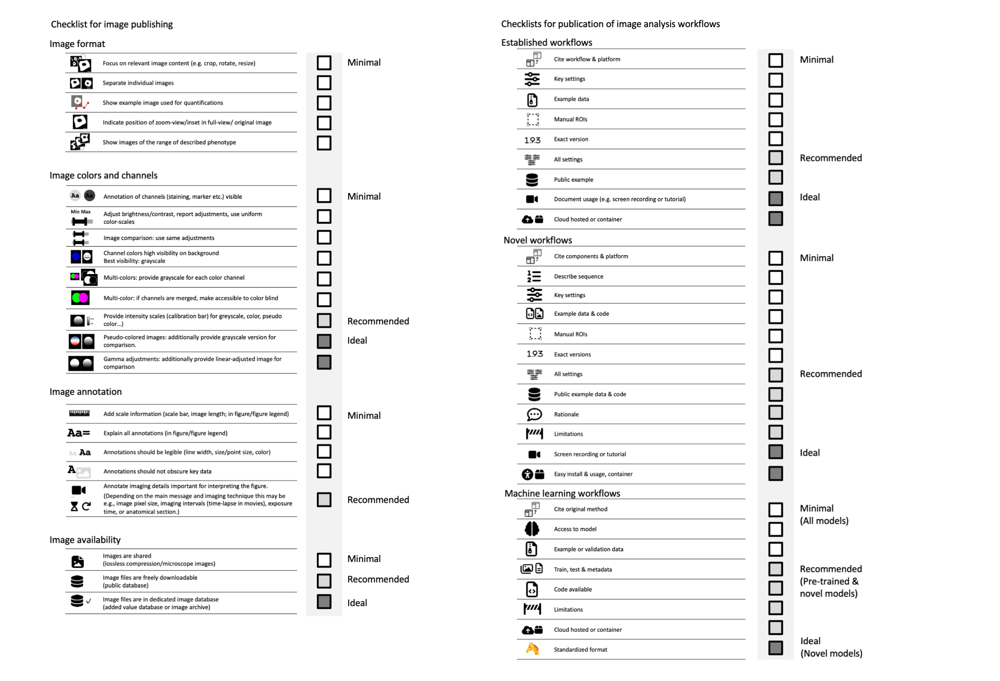

Do images tell the truth?
Objectivity and truth matter in scientific images, especially as we use them to communicate insights about life and the universe. Today, AI is igniting debates in microscopy imaging. Does AI accurately emnhances reality? Are hallucinations introduced? And what defines a truly “raw” image in the era of advanced microscopes? For the Christmas edition of the Journal of Cell Sciences, I wrote about our community efforts towards improving images in publication and put our work into a historical perspective.

Enlightenment & drawings
Debates about truth in images did not arise with AI. While the imaging methods are new, the discussions about image objectivity has long historical roots. In the Enlightenment era, similar discussions happened around drawings, and duelists were the observing scientists, their scientific illustrators and copperplate engravers. Even then, achieving objectivity was tough and “fixing the empirically variable, excluding the accidental, and eliminating the impure,” as Goethe noted, was daunting in images.
Photography
Photography was a game-changer in the 18 hundreds, as AI is today. Arthur Worthington’s captures this well. Worthington drew the shape of falling drops in their nearly otherworldly symmetry. Shocked by his first photos, revealing the irregular nature of the splashes, he wrote “the mind of the observer is filled with an ideal splash, whose perfection may never be realized.” Highly recommend his book “Romance of Science Series - The Splash of a Drop” - free on the Internet Archive.

Image adjustments, then and now
Early photography needed a lot of “effort and artifice” (Daston, Objectivity). Early pics were often coarse and had to be tweeked to show anything at all. What was acceptable and what was misleading? An early textbook for microscopy images from 1890 gives us a clue: splicing images was commonly practiced for efficiency, while altering background colors raised concerns about potential manipulation. Its author Neuhauss also writes that “all measures that uniformly impact the entire image are unequivocally permissible,” a notion almost unchanged in contemporary guides for the now digital images (Cromey, 2013).

Community efforts
The gap between what scientists see and what tech shows will remain. Bridging it and finding consensus what images tell the truth will always need collective efforts and debates in the scientific community.
Read the full article and many more about community here.
More reading
My blog series about image handling:- How to… image formatting (August 1) Link to blog
- How to… image scale information (August 3) Link to blog
- How to… image annotation (August 8) Link to blog
- How to… image colors (August 10) Link to blog
- How to… image availability (August 15) Link to blog
- Cheat sheets for image publishing (August 21) Link to blog
- A short history of science images (August 27) Link to blog
- How to… image analysis (Sept 20) Link to blog
- How to… avoid misleading with images (Sept 22) Link to blog
Our community effort for image publication, out in Nature Methods:
